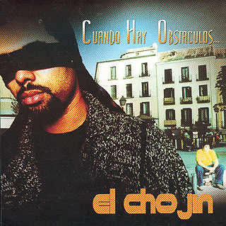

Biografía y Discografia
Entre sus trabajos encontramos el proyecto 995 (los cuatro trabajos que hizo el grupo) en colaboración con otros raperos españoles y en solitario Mi turno, El nivel sube, Sólo para adultos , su disco con más repercusión mediática especialmente por temas como "Lola" (el cual le proporcionó fama fuera del panorama del rap); Cuando Hay Obstáculos... y ...Jamás Intentes Negarlo (las iniciales de estos dos últimos álbumes forman el A.K.A. de este MC). Tras estos 7 discos, el Chojin volvió a publicar una maqueta, titulada Rap por placer, de distribución gratuita vía internet.
| Discos en esta época | Portada | Escuchalo aquí |
|---|---|---|
| Mi Turno (Album Debut), 1999 |  |
|
| El nivel sube, 2000 | |
|
| Solo para adultos, 2001 | |
|
| Cuando Hay Obstáculos..., 2002 |  | |
| ...Jamás Intentes Negarlo, 2003 | |
A principios de 2005 editó su octavo LP en un concurso organizado por el propio artista en su página web.
En el año 2007 publicó, en solitario, Striptease (LP), un álbum en el cual desnuda su alma, y sus inquietudes, jugando con la ironía las chicas y con la colaboración de nuevos y veteranos productores, de guitarristas, armónicas, pianos y un coro góspel.
En el mismo año, Chojín escribió y protagonizó “El Alma de Alexander Oboe”, un espectáculo teatral por la integración producido por la Casa de los Pueblos y se presentó en el Festival Madrid Sur. Así mismo, llevó a cabo una gira por distintos teatros de España.
El 23 de diciembre de 2008 obtuvo el premio Guinness World Records al "MC más rápido", consiguiendo rapear 921 sílabas en un minuto con la canción "Vo-ca-li-za".
Al año siguiente publicó de nuevo una maqueta de distribución gratuita titulada Aún Rap Por Placer, compuesta por seis tracks y una colaboración de los madrileños Duo Kie.
En marzo de 2009 publicó Cosas que pasan, que no pasan y que deberían pasar, un álbum compuesto de 30 temas, con colaboraciones muy variadas, como la de Locus (Duo Kie), Maika Sitté, la banda de Blues Red House, el cómico El Gran Wyoming, el cantautor Luis Eduardo Aute, Donpa, La Orquesta de Cámara Clave 1 y Astrid Jones, además de otros muchos en las producciones.
Desde el 28 de enero hasta el 24 de junio de 2010, El Chojin apareció todos los jueves haciendo un resumen de rap sobre las noticias de la semana, en "Las noticias de la tarde" de La 2.
El 11 de mayo de 2010 publicó junto a Francisco Reyes Rap. 25 años de rimas, libro sobre la historia del rap en España.
En enero de 2011, El Chojin publica su libro de reflexiones "Ríe cuando puedas, llora cuando lo necesites" con la editorial Espasa. En este libro, el MC de Torrejón cuenta su visión de la vida, reflexiones y anécdotas.
El 15 de marzo de 2011 publicó su undécimo álbum, titulado El Ataque De Los Que Observaban. En quince canciones, El Chojin trata temas tan variados como el acoso escolar ("La triste historia del vecino de arriba"), las relaciones de pareja ("Idiomas distintos") e incluso las críticas ("Me dijeron"). En el tema "Rap vs racismo" colaboran algunos de los artistas más importantes del género en España: Lírico (Violadores del Verso), Santo (Falsalarma), El Langui (La Excepción), Kase O (Violadores del Verso), Nach, Locus (Duo Kie), Ose (995), Nerviozzo (Duo Kie), Sho Hai (Violadores del Verso), Zatu (SFDK), Gitano Antón (La Excepción), Titó (Falsalarma)y Xhelazz.
| Discos en esta época | Portada | Escuchalo aquí |
|---|---|---|
| 8jin, 2005 | |
|
| Striptease, 2007 | |
|
| Cosas que pasan, que no pasan y que deberían pasar, 2009 | |
|
| El ataque de los que observaban, 2011 | |
| Discos en esta época | Portada | Escuchalo aquí |
|---|---|---|
| I.R.A. (Instinto, Razón, Autobiografía), 2013 | |
|
| Energía, 2015 | |
|
| Recalculando Ruta, 2017 | |
|
| ...y el último, 2019 |  |
|
| Discos en esta época | Portada | Escuchalo aquí |
|---|---|---|
| Classic Shit, 2022 | |
|
| Negro Oscuro, 2023 | |
|
| Con Todo, 2023 | |